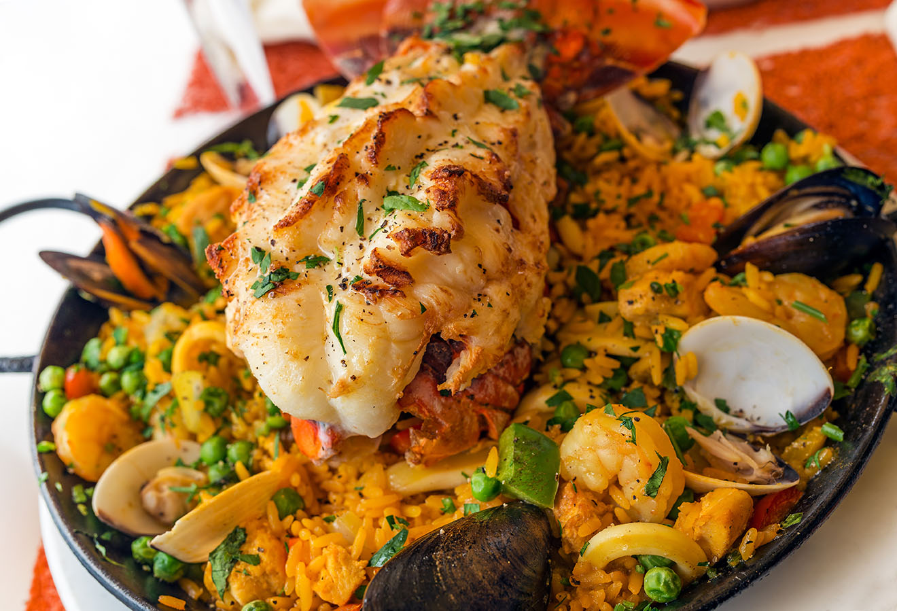

Paella

Description
Paella is a rice dish originally from Valencia.
For this reason, many non-Spaniards view it as Spain's national dish
but Spaniards almost unanimously consider it to be a dish from the Valencian region. Valencians, in turn, regard paella as one of their identifying symbols.
Ingredients
- 2 ½ cups uncooked white rice
- 6 cups chicken stock, divided
- 3 cloves garlic
- 1 teaspoon chopped fresh parsley
- ½ teaspoon curry powder
- 5 saffron threads
- salt and ground black pepper to taste
- ¼ cup olive oil
- 1 onion, diced
- 1 (3 pound) whole chicken, cut into small pieces
- 2 cups peeled and deveined small shrimp, diced
- 6 small lobster tails
- ½ pound clams in shell, scrubbed
- 1 (8 ounce) jar mushrooms, drained
- 1 cup green peas
- 1 (2 ounce) can mussels
Steps to make the burger
- Rinse the rice with cold water; drain; set aside. Bring the chicken stock to a boil in a saucepan over medium-high heat, reduce the heat to low, cover, and keep warm. Work the garlic, parsley, curry powder, saffron threads, salt, black pepper, and 1/2 cup of the hot chicken stock together with a mortar and pestle until a smooth liquid forms; set the seasoning liquid aside.
- Heat the olive oil in a paella pan over medium-high heat; cook and stir the onion until lightly browned. Stir in the chicken, shrimp, lobster, and clams; cook and stir until the chicken is no longer pink in the center, about 10 minutes. Pour in the seasoning liquid.
- Stir in the rice, pour in the hot chicken stock, and simmer until the rice is nearly tender, about 15 minutes. Add mushrooms, peas, and mussels; stir two times, and simmer for 10 minutes. Remove from heat; cover and let stand until rice is soft and flaky, about 7 minutes.